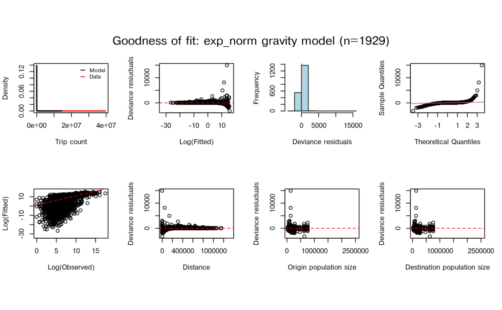

Introduction
introduction.Rmdnomad stores fitted mobility models for infectious
disease modelling. The usual workflow is:
- identify a plausible source mobility dataset;
- inspect the fitted models available for that dataset;
- prepare a distance matrix and population vector for the prediction setting;
- predict a mobility matrix;
- check warnings and sensitivity to alternative models.
Available Data And Models
The mobility catalogue describes the source datasets used to fit models in the package. It is the first thing to check because a model fitted to the wrong country, period, or spatial scale can be more misleading than helpful.
#> # A tibble: 56 × 14
#> name country date_start date_end n type sampling_scheme censoring
#> <chr> <chr> <date> <date> <dbl> <chr> <chr> <chr>
#> 1 ken_cd… KEN 2008-06-01 2009-07-03 8.48e10 call… 100% of leadin… NA
#> 2 nam_cd… NAM 2010-10-02 2014-04-30 1.84e 9 call… 100% of leadin… "Two dis…
#> 3 bfa_cd… BFA 2016-01-01 2016-12-31 3.77e 7 call… 1.4% random se… NA
#> 4 zmb_cd… ZMB 2020-08-01 2020-12-30 1.12e 8 call… 100% of leadin… NA
#> 5 zmb_fb… ZMB NA NA 9.53e 6 face… NA NA
#> 6 ago_fb… AGO 2024-07-29 2025-06-16 3.98e 8 face… Facebook Activ… "<10 tri…
#> 7 bdi_fb… BDI 2024-07-29 2025-06-16 3.03e 7 face… Facebook Activ… "<10 tri…
#> 8 ben_fb… BEN 2024-07-29 2025-06-16 7.99e 7 face… Facebook Activ… "<10 tri…
#> 9 bfa_fb… BFA 2024-07-29 2025-06-16 1.15e 8 face… Facebook Activ… "<10 tri…
#> 10 bwa_fb… BWA 2024-07-29 2025-06-16 2.85e 7 face… Facebook Activ… "<10 tri…
#> # ℹ 46 more rows
#> # ℹ 6 more variables: aggregation <chr>, publication <chr>,
#> # has_fitted_models <lgl>, prediction_period_days <dbl>, distance_unit <chr>,
#> # provenance <chr>Check has_fitted_models before selecting a dataset: some
catalogue entries are awaiting data and have no model yet. The model
catalogue below lists the actual fitted variants, along with their
source metadata and fit statistics.
model_table(country = "ZMB")#> # A tibble: 14 × 27
#> name data_name mobility_model model_type hierarchical max_rhat min_n_eff
#> <chr> <chr> <chr> <chr> <lgl> <dbl> <dbl>
#> 1 zmb_cdr_… zmb_cdr_… departure-dif… exp FALSE 1.01 1239
#> 2 zmb_fb_2… zmb_fb_2… gravity exp FALSE 1.01 2
#> 3 zmb_fb_2… zmb_fb_2… departure-dif… exp FALSE 1.01 655
#> 4 zmb_fb_2… zmb_fb_2… departure-dif… power FALSE 1.01 587
#> 5 zmb_fb_2… zmb_fb_2… departure-dif… radiation FALSE 1.01 1060
#> 6 zmb_fb_2… zmb_fb_2… gravity basic FALSE 1 0
#> 7 zmb_fb_2… zmb_fb_2… gravity exp FALSE 1.05 3
#> 8 zmb_fb_2… zmb_fb_2… gravity exp_norm FALSE 1.01 801
#> 9 zmb_fb_2… zmb_fb_2… gravity power FALSE 1.55 3
#> 10 zmb_fb_2… zmb_fb_2… gravity power_norm FALSE 1 804
#> 11 zmb_fb_2… zmb_fb_2… gravity scaled_po… FALSE 1.03 66
#> 12 zmb_fb_2… zmb_fb_2… gravity transport FALSE 1 0
#> 13 zmb_fb_2… zmb_fb_2… radiation basic FALSE NA NA
#> 14 zmb_fb_2… zmb_fb_2… radiation finite FALSE NA NA
#> # ℹ 20 more variables: rhat_above_1_1 <lgl>, supports_newdata <lgl>,
#> # supports_stochastic_draws <lgl>, DIC <dbl>, RMSE <dbl>, MAPE <dbl>,
#> # R2 <dbl>, country <chr>, date_start <date>, date_end <date>, n <dbl>,
#> # data_type <chr>, sampling_scheme <chr>, censoring <chr>, aggregation <chr>,
#> # publication <chr>, has_fitted_models <lgl>, prediction_period_days <dbl>,
#> # distance_unit <chr>, provenance <chr>Inspect A Model
The model profile summarises the scale and period of the source data. This is the quickest way to check whether a model is plausible for a prediction task.
model <- model_db$zmb_fb_2025_mod_grav_exp_norm
model_profile(model)#> # A tibble: 1 × 27
#> name data_name country aggregation date_start date_end source_duration_days
#> <chr> <chr> <chr> <chr> <date> <date> <dbl>
#> 1 zmb_… zmb_fb_2… ZMB admin_2 2024-07-29 2025-06-16 21
#> # ℹ 20 more variables: prediction_period_days <dbl>, distance_unit <chr>,
#> # supports_newdata <lgl>, supports_stochastic_draws <lgl>, n_origin <int>,
#> # n_dest <int>, distance_min <dbl>, distance_q25 <dbl>,
#> # distance_median <dbl>, distance_q75 <dbl>, distance_max <dbl>,
#> # population_total <dbl>, population_min <dbl>, population_median <dbl>,
#> # population_max <dbl>, max_rhat <dbl>, min_n_eff <dbl>,
#> # rhat_above_1_1 <lgl>, has_mobility_data <lgl>, has_saved_check <lgl>Model-check statistics and plots are available even when the underlying private mobility matrix cannot be bundled.
check(model, plots = FALSE)#> $DIC
#> [1] NA
#>
#> $RMSE
#> [1] 965441.9
#>
#> $MAPE
#> [1] 32.18002
#>
#> $R2
#> [1] 0.1056686
plot(model)
Prepare A Small Prediction Setting
Predictions use the same data structure as
mobility::predict(): a distance matrix D and
either one population vector N or origin/destination
vectors N_orig and N_dest.
Here we make a small, named toy setting. The values are not intended to be real Zambia data; they are just enough to show the shape of a prediction request.
Show how to construct the example regions
places <- data.frame(
name = c("Lusaka", "Kabwe", "Ndola", "Kitwe", "Livingstone"),
x = c(0, 1.2, 2.8, 2.6, -1.4),
y = c(0, 1.0, 2.7, 2.4, -2.7),
population = c(2500000, 230000, 475000, 690000, 170000)
)
D <- as.matrix(dist(places[, c("x", "y")])) * 120
dimnames(D) <- list(places$name, places$name)
N <- setNames(places$population, places$name)
newdata <- list(D = D, N = N)Make A Prediction
This toy request is smaller than the model source data, so
nomad warns. That is deliberate: warnings are part of the
workflow, not just noise to suppress.
M <- predict(model, newdata = newdata, unit = "km")#> Warning: ! Prediction data have far fewer regions than the fitted source data.
#> ℹ `newdata` has "5" regions; the fitted model has "115".
#> • Predictions may be coarser than the source data can support.#> Warning: ! Prediction population is much smaller than the fitted source population.
#> ℹ `newdata` population: "4065000"; fitted model source population: "18296043".
#> • Check that this model is suitable for the population scale being predicted.
round(M / 1000, 1)#> Lusaka Kabwe Ndola Kitwe Livingstone
#> Lusaka 34681.3 53.7 0.0 0.0 0.1
#> Kabwe 4.9 3189.6 0.2 0.9 0.0
#> Ndola 0.0 0.3 5389.0 1210.3 0.0
#> Kitwe 0.0 2.1 1757.8 7826.9 0.0
#> Livingstone 0.0 0.0 0.0 0.0 2362.0
#> attr(,"model")
#> [1] "gravity"
#> attr(,"type")
#> [1] "exp_norm"
#> attr(,"source_duration_days")
#> [1] 21
#> attr(,"prediction_period_days")
#> [1] 21
#> attr(,"duration_scale")
#> [1] 1
#> attr(,"data_name")
#> [1] "zmb_fb_2025"Rows are origins and columns are destinations. These displayed values are in thousands of predicted trips over 21 days, not probabilities. A person can contribute more than one trip. The names on the matrix and population vector must identify the same regions; nomad aligns named populations before prediction.
For a real analysis, the next step would be to decide whether the warning is acceptable, whether a better-matched model exists, or whether the prediction regions should be changed.
Use Source Data When You Want A Clean Demonstration
The fitted model also contains public covariates from the source setting. Reusing those covariates is useful for checking package mechanics without introducing a scale mismatch.
source_data <- model$get_model()$data[c("D", "N_orig", "N_dest")]
M_source <- predict(model, newdata = source_data)
M_source[1:5, 1:5]#> destination
#> origin ZMB.1.1_1 ZMB.1.2_1 ZMB.1.3_1 ZMB.1.4_1 ZMB.1.5_1
#> ZMB.1.1_1 4.503207e+06 207404.91311 1.175758e+01 2.866407e+03 3.067882e+05
#> ZMB.1.2_1 4.595483e+04 997777.28396 2.401973e+01 4.359945e+01 1.965902e+05
#> ZMB.1.3_1 2.233465e+00 20.59288 8.554261e+05 1.436979e-03 3.196422e+01
#> ZMB.1.4_1 8.675690e+02 59.55731 2.289578e-03 1.362974e+06 5.927834e+01
#> ZMB.1.5_1 1.268509e+05 366863.60721 6.957575e+01 8.098131e+01 1.861987e+06If a prediction should represent a different time period, supply
duration in days or a
date_start/date_end pair. The new Facebook
models represent 21-day trip counts; collection dates are a separate
field. Scaling assumes a constant trip rate. Original Zambia models with
an unknown prediction period can only return unscaled predictions, with
a warning.
cdr_model <- model_db$zmb_fb_2025_mod_dd_exp
cdr_data <- cdr_model$get_model()$data[c("D", "N_orig", "N_dest")]
M_30 <- predict(cdr_model, newdata = cdr_data, duration = 30)
attr(M_30, "duration_scale")#> [1] 1.428571Compare Alternatives
When more than one model is plausible, use model-fit statistics to
make the comparison explicit. model_weights() gives simple
candidate weights from a chosen metric; users should still decide
whether the source data are relevant.
weights <- model_weights(data_name = "zmb_fb_2025", metric = "RMSE")
weights[, c("name", "RMSE", "weight")]#> # A tibble: 12 × 3
#> name RMSE weight
#> <chr> <dbl> <dbl>
#> 1 zmb_fb_2025_mod_dd_exp 946018. 0.0898
#> 2 zmb_fb_2025_mod_dd_power 946521. 0.0897
#> 3 zmb_fb_2025_mod_dd_radiation 946973. 0.0897
#> 4 zmb_fb_2025_mod_grav_basic 819787890. 0.000104
#> 5 zmb_fb_2025_mod_grav_exp 947086. 0.0897
#> 6 zmb_fb_2025_mod_grav_exp_norm 965442. 0.0879
#> 7 zmb_fb_2025_mod_grav_power 942100. 0.0901
#> 8 zmb_fb_2025_mod_grav_power_norm 946881. 0.0897
#> 9 zmb_fb_2025_mod_grav_scaled_power 952655. 0.0891
#> 10 zmb_fb_2025_mod_grav_transport 1057907. 0.0803
#> 11 zmb_fb_2025_mod_rad_basic 831656. 0.102
#> 12 zmb_fb_2025_mod_rad_finite 833482. 0.102nomad_ensemble() combines predictions from several
models using explicit weights. This example compares two families fitted
to the same 21-day dataset. Each is predicted for the same target
regions, so the outputs can be combined. The weights sum to one; 0.5
gives each prediction equal influence.
ensemble <- nomad_ensemble(
list(cdr = cdr_model, facebook = model),
weights = c(cdr = 0.5, facebook = 0.5)
)
M_ensemble <- predict(ensemble, newdata = newdata, unit = "km")#> Warning: ! Prediction data have far fewer regions than the fitted source data.
#> ℹ `newdata` has "5" regions; the fitted model has "115".
#> • Predictions may be coarser than the source data can support.#> Warning: ! Prediction population is much smaller than the fitted source population.
#> ℹ `newdata` population: "4065000"; fitted model source population: "18296043".
#> • Check that this model is suitable for the population scale being predicted.#> Warning: ! Prediction data have far fewer regions than the fitted source data.
#> ℹ `newdata` has "5" regions; the fitted model has "115".
#> • Predictions may be coarser than the source data can support.#> Warning: ! Prediction population is much smaller than the fitted source population.
#> ℹ `newdata` population: "4065000"; fitted model source population: "18296043".
#> • Check that this model is suitable for the population scale being predicted.#> [1] 56989960Simulated Predictions
With nsim > 1, predictions are stochastic draws.
nomad can summarise and select representative lower,
median, and upper matrices.
draws <- predict(model, newdata = source_data, nsim = 10, seed = 1)
uncertainty_summary(draws, metrics = c("total", "between_region"))#> # A tibble: 6 × 3
#> metric prob value
#> <chr> <dbl> <dbl>
#> 1 total 0.025 254163766.
#> 2 total 0.5 254206733.
#> 3 total 0.975 254234581.
#> 4 between_region 0.025 93395200.
#> 5 between_region 0.5 93420244.
#> 6 between_region 0.975 93436944.The “Selecting a mobility model” vignette gives more detail on warnings, uncertainty summaries, prediction differences, and ensembles. The “Identifying a mobility model for an outbreak” vignette shows how model choice can be linked to an epidemiological outcome rather than only to mobility fit metrics.